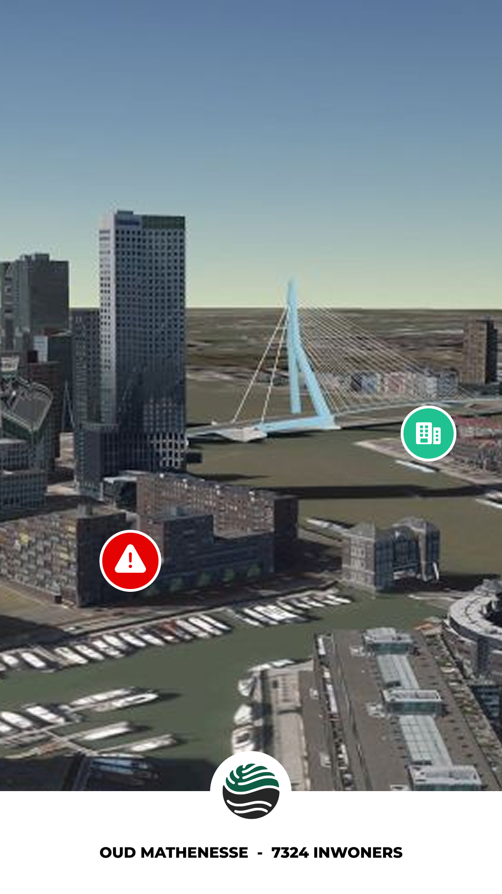
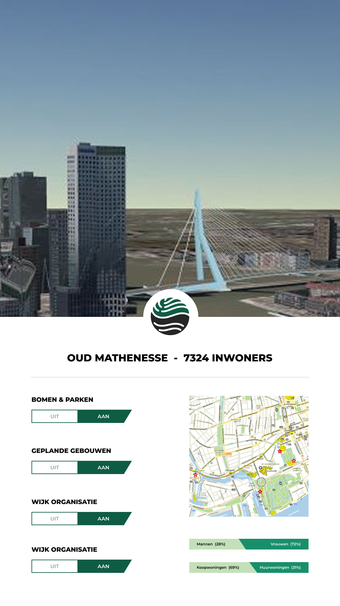
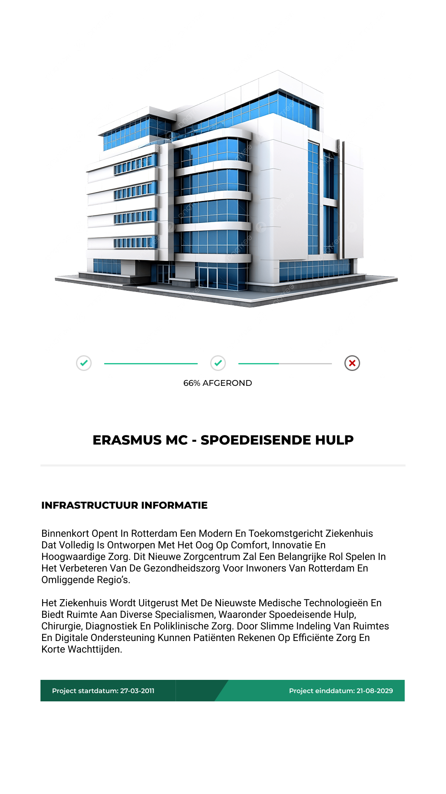

GR
Gemeente Rotterdam
Samen bouwen aan een leefbare, duurzame en innovatieve stad.
Interactieve wijkborden maken stedelijke plannen, werkzaamheden en veranderingen in de wijk inzichtelijk. Door data zichtbaar en begrijpelijk te maken in de openbare ruimte, kunnen bewoners laagdrempelig meedenken en invloed uitoefenen op de ontwikkeling van hun leefomgeving.

Productvisie
Ontwerpvraag
Hoe kunnen we buurtbewoners van de wijk Oud-Mathenesse boven de 21 jaar op een toegankelijke manier betrekken bij ontwikkelingen in hun wijk?
Samen bouwen aan een leefbare, duurzame en innovatieve stad.
De digitale samenleving voor creativiteit en transparantie in Rotterdam.
Citiverse brengt een urban digital twin die bewoners en data ontwikkelingen verbindt.
Citiverse Deskresearch
De Citiverse is een platform dat de fysieke stad en de digitale wereld verbindt. Het is publiek, mensgericht en democratisch ingericht, met nadruk op open standaarden en controle van burgers over hun eigen data.
De Citiverse gebruikt API's en open standaarden zoals OpenAPI en GraphQL, zodat systemen kunnen samenwerken zonder afhankelijkheid van een partij.
Korte conclusie: een digitale laag over de stad die burgers actief betrekt, data veilig en lokaal houdt en technologie inzet om steden slimmer, duurzamer en inclusiever te maken.
Stakeholders foto

Analyse
Communicatiekanalen
De gemeente communiceert geplande werkzaamheden voornamelijk via digitale kanalen zoals websites, PDF's, participatieplatforms, (verkeers)borden en brieven.
Versnipperde informatie
Deze informatie is verspreid over meerdere bronnen en vaak abstract, tekstueel.
Beperkte zichtbaarheid
Bewoners ervaren beperkte zichtbaarheid van plannen op wijkniveau en hebben weinig inzicht in timing, impact en samenhang.
Participatie
Als participatie plaatsvindt via online consultaties is dat door middel van enquetes.
Betrokken partijen
Betrokken partijen zijn onder andere bewoners, gemeente, beleidsmakers, ontwerpers, aannemers en bedrijven.
Specifiek en concreet
Bewoners zien in hun eigen wijk actuele, visueel duidelijke informatie over wat er speelt en verandert.
Meetbaar
Meer bewoners doen mee, zijn beter geinformeerd en geven feedback via bijvoorbeeld QR-codes.
Tijdgebonden
Participatie en verwerking van feedback worden gevolgd en geevalueerd binnen de projectperiode.
Realistisch en aanvaardbaar
De aanpak is haalbaar met bestaande plekken in de wijk en digitale middelen zoals enquetes.
Positief geformuleerd
De focus ligt op plannen zichtbaar maken en bewoners laten zien dat hun mening telt.
Toekomstgericht
Bewoners voelen zich beter geinformeerd en meer betrokken bij ontwikkelingen.
Gap analysis
De gewenste situatie laat zien wat er nu nog mist in wijkinformatie en participatie.
Doelgroep
De doelgroep bestaat uit buurtbewoners van de gemeente Rotterdam die direct te maken hebben met ontwikkelingen in hun wijk, zoals bouwprojecten, herinrichting van openbare ruimte of duurzaamheidsinitiatieven.
De doelgroep beweegt zich voornamelijk binnen hun eigen wijk. Betrokkenheid ontstaat vooral wanneer informatie herkenbaar, relevant en zichtbaar is in hun directe leefomgeving.
Scope
(Negatieve) brainstorm
Deze sessie richt zich op het bewust benoemen van zwakke punten en risicos in het prototype. Door negatief te denken, worden verbeterpunten zichtbaar en kan het project sterker en betrouwbaarder worden ontwikkeld.
Korte conclusie
De negatieve brainstorm laat vooral zien dat het project moet focussen op gebruiksvriendelijkheid, inclusie, veiligheid en transparantie. Door de risicos te vermijden en de aandachtspunten te versterken, kan het prototype beter aansluiten op de behoeften van bewoners en de stad.
Onderzoeken
Tijdens deze fase hebben we deskresearch uitgevoerd naar het Citiverse om een beter beeld te krijgen van de context en mogelijkheden. Daarnaast hebben we persona’s opgesteld om de doelgroep en hun behoeften helder in kaart te brengen. Ook hebben we een stakeholdermap opgesteld en gedigitaliseerd, zodat alle betrokken partijen en hun rollen inzichtelijk zijn. Deze inzichten hebben ons geholpen om gerichter te ontwerpen en ontwikkelen.
Helder krijgen of de huidige situatie klopt en of de gemeente dit ook als probleem ziet. Indien er tijd is, een eerste concept prototype maken.
Interview doelen


Concept
Tijdens deze sprint hebben wij gesprekken gevoerd met onze praktijkpartners om hun behoeften en ideeën in kaart te brengen. Vervolgens hebben we de doelgroep onderzocht om hun wensen beter te begrijpen. Op basis van deze inzichten hebben we een eerste UI-design ontwikkeld, samen met een Unity-bestand waarin alle 3D-assets zijn samengebracht.
Een concept ontwikkelen waarbij wij werkzaamheden binnen Oud-Mathenesse kunnen weergeven op een manier die voor bewoners duidelijk, relevant en aantrekkelijk is.
Voor het prototype van onze digitale wijkborden hebben wij een UI-design ontwikkeld waarbij visuele hiërarchie en zichtbaarheid van informatie centraal staan. Het doel van het ontwerp is om gebruikers snel en intuïtief toegang te geven tot belangrijke wijkinformatie, zonder dat zij hoeven te zoeken of te twijfelen over waar zij moeten klikken.
Bij het ontwerpen hebben wij gebruikgemaakt van UX-principes zoals het duidelijk onderscheiden van primaire en secundaire informatie, het toepassen van consistente kleuren en het gebruik van goed leesbare typografie. Belangrijke functies en meldingen zijn visueel groter en opvallender gemaakt, zodat deze direct de aandacht trekken. Minder belangrijke informatie is subtieler weergegeven, zodat het scherm overzichtelijk blijft.
Naast het visuele ontwerp werken wij aan een interactieve uitwerking in de Unity game engine. Hierin hebben wij al een 3D-kaart van de wijk ontwikkeld. De volgende stap is het integreren van alle UI-elementen in deze omgeving, zodat gebruikers het wijkbord kunnen ervaren zoals het in de praktijk gebruikt zou worden. Dit maakt het mogelijk om het ontwerp realistischer te testen en beter te evalueren hoe de interface functioneert in een ruimtelijke context.



Betrokkenheid bij de wijk
Bewoners voelen zich over het algemeen niet sterk betrokken, terwijl ze het wel belangrijk vinden om op de hoogte te blijven.
Huidige informatievoorziening
Informatie komt vooral via social media (Facebookgroepen) en brieven van de gemeente. Het is versnipperd en moeilijk vindbaar.
Informatiebehoeften
Duidelijke info over werkzaamheden, omleidingen, lokaal nieuws, activiteiten en buurtgerichte meldingen of hulpvragen.
Reactie op het concept
Positief over centrale informatie en inspraak, maar zorgen over afnemend gebruik, relevantie, misbruik en vandalisme.
Het team
Eerlijkheid
We moeten transparant communiceren wat opgeslagen en verwerkt wordt.
Nieuwsgierigheid
Bewoners nieuwsgierig maken naar wat er gebeurt in de omgeving.
Creativiteit
Rotterdam is een stad van innovatie. Ruimte voor vernieuwende oplossingen.
Behulpzaamheid
Het systeem moet behulpzaam zijn voor bewoners.
Plezier
Het moet een leuke experience worden voor bewoners.
Romeo
Olaf
Jake
Salah